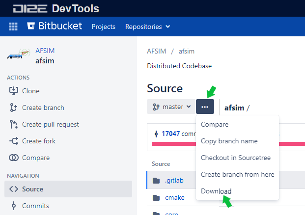
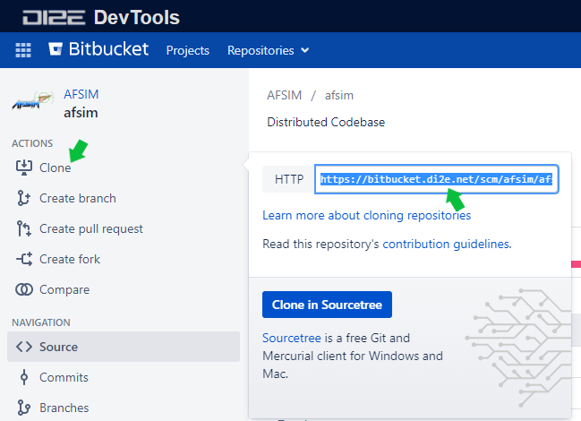

Build Instructions¶
Overview¶
This document describes how to build the AFSIM baseline applications, how directories may be structured, and how extensions and plug-ins may be included in the build. It is intended for software developers and end-users needing to compile AFSIM.
Prerequisites¶
The following Operating Systems and Compilers are supported.
Operating System |
Compiler |
Version(s) |
Architecture |
|---|---|---|---|
Windows 10 |
2015, 2017, or 2019 |
64-bit |
|
Linux |
4.8.5 |
64-bit |
Note
The term supported infers AFSIM, as distributed, has been tested against these configurations. While AFSIM successfully compiles and runs in many configurations, only the listed configurations are fully tested by the development team.
Tool |
Version(s) |
Required to |
Notes |
|---|---|---|---|
3.7 or higher |
Generate build system |
For Visual Studio 2019, CMake 3.14 or higher is required. |
|
3.x.x |
Run automated tests and build Sphinx documentation |
||
2.1.x or higher |
Build Sphinx documentation |
Requires MikTex on Windows and additional latex and image packages on Linux Sphinx 2.4.x or later is required to build LaTeX/PDF documentation |
|
0.14.x or higher |
Markdown support for Sphinx documentation |
||
2.9 or higher |
Build Sphinx documentation |
Windows only |
|
5.16.3 |
Build Sphinx documentation (LaTex/PDF) |
||
1.8.5 or higher |
Build Doxygen documentation |
Requires Graphviz to be installed |
|
2.38 or higher |
Build Doxygen documentation |
Requires Doxygen to be installed |
|
1.10.0 |
Run Unit Tests |
||
Windows: 8.1.0 Linux: 4.8.5 |
Build classified release |
||
MESA Graphics Libraries |
Latest |
Build Graphical Applications |
Debian: libglu1-mesa-dev and libgl1-mesa-dev RHEL: mesa-libGLU-devel and mesa-libGL-devel |
Linux JPEG Libraries |
Latest |
Build Graphical Applications |
Debian: libjpeg62 and libjpeg62-dev |
Tip
Verify User and System Environment Variables are correct, including PATH settings, to avoid tool execution issues.
Obtaining Software¶
AFSIM source and application files may be obtained using the following methods:
Install AFSIM source and application files from an official distribution.
Download AFSIM source files from the official AFSIM repository.
Clone AFSIM source from the official AFSIM repository.
Note
AFSIM software obtained from distribution files will include compiled AFSIM application executables in the release, such as Mission, Warlock, etc. Cloned repositories require a subsequent build to generate the target AFSIM applications.
Installing AFSIM and the AFSIM Source Code from a Distribution¶
The AFSIM Release Software may be obtained from the AFSIM Portal on Confluence by navigating to the desired release and downloading the release package (zip, msi, tar.gz, deb, rpm).
Tip
When a distribution package is extracted, a folder is created in the destination path specified for extraction (e.g. afsim-x.y.z-win64). This folder may be renamed to a user specific convention and moved to the desired location prior to performing builds.
See the AFSIM Install Instructions for additional information on obtaining AFSIM from a distribution.
The following is an example of the directory structure when installing AFSIM from a distribution file.
path/to/afsim/distribution |__ bin |__ demos |__ documentation |__ resources |__ swdev | |__ src | . | . | CMakeLists.txt | . | . |__ tools |__ training
Note
The swdev directory contains the AFSIM source code when installing from a distribution file. The bin directory contains the AFSIM application executables and libraries.
Downloading the AFSIM Source from a Remote Repository¶
The AFSIM source for Windows and Linux may be downloaded from the afsim repository on Bitbucket by selecting the ellipsis icon and the Download option from the drop-down menu as shown below:
{kind=link}
Once the download is complete, the .zip file may be extracted in the root directory by right clicking the zip file and selecting the root directory as the destination. An example of the resulting directory structure is shown below:
path/to/afsim |__ .gitlab |__ cmake |__ core |__ doc |__ mission | . | . CMakeLists.txt LICENSE.md README.md . .
Note
The Linux and Windows directory structures are the same.
Cloning AFSIM Source from a Remote Repository¶
AFSIM remote repositories may be cloned in both Windows and Linux using the “git clone” command, passing the URL of the remote repository, and optionally the desired name of the local repository.
The AFSIM project address for cloning may be found on the afsim repository on Bitbucket by selecting Clone from the ACTIONS menu and copying the highlighted text in the pop-up window as shown below:
{kind=link}
The following git clone command example (Windows), will create the afsim sub-directory, and clone the afsim remote repository within:
git clone https://bitbucket.di2e.net/scm/afsim/afsim.git afsim
An example of the resulting directory structure is shown below:
path/to/afsim |__ .gitlab |__ cmake |__ core |__ doc |__ mission | . | . CMakeLists.txt LICENSE.md README.md . .
Tip
Other AFSIM repos such as demos, tools, and training, may be cloned from Bitbucket in a similar manner. These repos may be found here: https://bitbucket.di2e.net/projects/AFSIM.
Build Environment¶
Directory Structure¶
To maintain a clean source tree, out-of-source builds are preferred. Out-of-source builds are accomplished by providing a separate, dedicated BUILD directory, outside of the source directories. This provides the user the ability to delete the build tree without deleting source files, keeps the build artifacts generated by CMake out of the source directories, and protects source files from version control tools.
For this example, BUILD directories have been created outside of the source directories under path/to/afsim:
Directory Structure from AFSIM Distribution File |
Directory Structure from AFSIM Download or Clone |
|---|---|
path/to/afsim
\|__ bin
\|__ demos
\|__ documentation
\|__ resources
\|__ swdev
\| \|__ **BUILD**
\| \|__ src
\| .
\| .
\| CMakeLists.txt
\| .
\| .
\|__ tools
\|__ training
|
path/to/afsim
\|__ .gitlab
\|__ **BUILD**
\|__ cmake
\|__ core
\|__ doc
\|__ mission
\|__ mystic
\|__ sensor_plot
\|__ tools
\|__ warlock
\| .
\| .
CMakeLists.txt
CMakeSettings.json
LICENSE.md
README.md
.
.
|
The top level source directories contain the main CMakeLists.txt files. The core directory contains the source code for the simulation framework (WSF) and its extensions. The application directories (mission, mystic, warlock, wizard, etc.) contain the source and test code for the managed applications.
Note
The swdev directory contains the source code filesystem when installing AFSIM from a distribution file. The bin directory contains the AFSIM application executables and libraries.
The demos folder contains all the demos and scenarios for the AFSIM applications. The regression_tests sub-directory under demos contains the <application-name>_list.txt files that specify the test files for Running the Regression Tests.
demos |__ acoustic | . | . |__ regression_tests | mission_list.txt | sensor_plot_list.txt | . | . |__ route_finder_demos |__ satellite_demos | . | .
Note
The regression test suite is not distributed with the AFSIM release and is available only when cloning or downloading the demos repo.
Unit test source files (C++) are located in test sub-directories under those modules or libraries that have unit test suites.
. . |__ core |__ doc |__ mission |__ tools | |__ geodata | |__ test | . | . | |__ util | |__ test | . | . |__ wizard |__ wsf_plugins . .
Including 3rd Party Libraries and Resources¶
The 3rd_party and vtk_resources artifacts may be downloaded from Confluence by navigating to the Developer Resources table for the desired release.
3rd party libraries and resources may be included in the AFSIM build by extracting the files in the AFSIM root directory (or other directory) and setting the SWDEV_THIRD_PARTY_PACKAGE_SOURCES and VTK_RESOURCES_SOURCEDIR in the CMake build options to the directory the files were downloaded in. See Configuring 3rd party libraries and resources for additional information.
Including Extensions and Plug-ins¶
Extensions (also called optional projects) and plug-ins can be included in the AFSIM build by placing them in the AFSIM root directory (or other directory) and setting the WSF_ADD_EXTENSION_PATH in the CMake build options. Setting the WSF_PLUGIN_BUILD CMake option to TRUE enables plugins in the build executables. See CMake Options for additional information.
Extensions have a directory that collects all the files and directories that make up the extension. That main directory must contain a wsf_module file that CMake will use to include the extension in the AFSIM build. The wsf_module filename has no extension and the file itself has no content. This file exists with the plugin as an indication to CMake that the directory includes an extension.
It also includes the test_<application-name> directory that contains the test_*.txt files that will be run along with an application’s auto tests. See Running the System Tests for additional information.
Generating a Buildsystem¶
CMake is used to generate the AFSIM buildsystem and provides both a command line and GUI interface for generating the buildsystem. Additional documentation for CMake can be found at https://cmake.org/documentation/.
CMake Command Line¶
One of the following CMake command signatures may be used to specify the source and build trees and generate a buildsystem:
cmake [<options>] <path-to-source>
Uses the current working directory as the build tree, and
<path-to-source>as the source tree containing the top-level AFSIMCMakeLists.txtfile. The specified path may be absolute or relative to the current working directory. See examples below:
CMake Command Line Using Path to “Source” |
||||
|---|---|---|---|---|
|
cmake [<options>] <path-to-existing-build>
Uses
<path-to-existing-build>as the build tree, and loads the path to the source tree from itsCMakeCache.txtfile (which must have been generated by a previous run of CMake). The specified path may be absolute or relative to the current working directory. For example:
CMake Command Line Using Path to “BUILD” |
||||
|---|---|---|---|---|
|
cmake [<options>] -S <path-to-source> -B <path-to-build>
Uses
<path-to-source>as the source tree and<path-to-build>as the build tree, containing the top-level AFSIMCMakeLists.txtfile. The specified paths may be absolute or relative to the current working directory. The build tree will be created automatically if it does not already exist. For example:
CMake Command Line Using Paths to “Source” and “BUILD” |
||||
|---|---|---|---|---|
|
Note
See CMake Options for a list of commonly used options.
CMake GUI¶
Launch the cmake-gui application (or cmake3-gui on Linux which supports the same command line interface as cmake) to specify paths to source and build directories. If no arguments are given, these paths may be specified using the following steps:
In the Where is the source code: field, enter the path to the source tree containing the top-level AFSIM
CMakeLists.txtfile, e.g.<path/to/afsim>/swdev/src. On supported windowing systems, you may also drag and drop theCMakeLists.txtfile into the CMake GUI.In the Where to build the binaries: field, enter the path to the build directory, e.g.
<path/to/afsim>/swdev/BUILD. You will be prompted to create this directory if it does not already exist. On supported windowing systems, you may also drag and drop a previously generatedCMakeCache.txtfile from an existing build into the CMake GUI.Make changes as necessary to the configuration options and then select the Configure button.
Note
If this is a new build (i.e. no CMake cache), you will have to specify the generator for the project (e.g. Visual Studio), and optional platform for generator (e.g. x64).
Once the Configure step is complete, select the Generate button to generate the buildsystem.
If using an IDE generator, such as Visual Studio, you may select the Open Project button to open the project file.
CMake Options¶
Options can be set in the CMake GUI or passed as command line arguments using -D<var>[:<type>]=<value>. The following variables are the most commonly used in modifying configurations:
- BUILD_WITH_<module>BOOL
Enables or disables each optional module (library extension or application).
- BUILD_MYSTIC_PLUGIN_<PluginName>BOOL
Enables or disables each Mystic plugin.
- BUILD_WARLOCK_PLUGIN_<PluginName>BOOL
Enables or disables each Warlock plugin.
- BUILD_WIZARD_PLUGIN_<PluginName>BOOL
Enables or disables each Wizard plugin.
- BUILD_WKF_PLUGIN_<PluginName>BOOL
Enables or disables each WKF plugin, which is loaded by multiple GUI applications.
- CMAKE_BUILD_TYPESTRING
Specifies the build type on single-configuration generators, such as Makefile Generators and Ninja, as opposed to multi-configuration generators, such as Microsoft Visual Studio. Possible values include
DebugandRelease(default).- CMAKE_INSTALL_PREFIXPATH
Specifies the install directory when
make installis invoked or theINSTALLtarget is built. Default is${CMAKE_BINARY_DIR}/wsf_install.- CMAKE_UNITY_BUILDBOOL
Enables or disables CMake unity build support (available in CMake 3.16 and later). This feature “enables batch compilation of multiple sources within each target”, resulting in significantly improved build times. Exact results will vary based on CPU, I/O subsystem, operating system, and compiler. Observed results with AFSIM generally show wall clock time improvements of at least 3x for clean builds.
- PROMOTE_HARDWARE_EXCEPTIONSBOOL (Advanced)
When set,
ut::PromoteHardwareExceptions(true)allows hardware exceptions, such as divide-by-zero and access-violation to be promoted tout::HardwareException. On Windows, the function must be called on each thread individually. When the CMake flag is not set, the function is still callable but does nothing.Marked as advanced and will only be seen in the CMake GUI if the “Advanced” box is checked.
- WSF_ADD_EXTENSION_PATHPATH
Define additional search paths for extensions and plugins. Multiple paths may be specified with a
;-separated list.- WSF_PLUGIN_BUILDBOOL
Builds shared object or DLL libraries instead of static libraries and enables plugins in the resulting executables. Default is TRUE.
- WSF_INSTALL_SOURCEBOOL
Enables or disables the installation of source files. Default is FALSE.
- WSF_INSTALL_DOXYGENBOOL
Enables or disables the installation of Doxygen directory and sub-directories, if DOXYGEN target was built. Default is FALSE.
- WSF_INSTALL_DOCUMENTATIONBOOL
Enables or disables the installation of documentation directory and sub-directories, if DOCUMENTATION target was built. Default is FALSE.
- WSF_INSTALL_DEMOSBOOL
Enables or disables the installation of demos directory and sub-directories. Default is FALSE.
- WSF_INSTALL_SCENARIOSBOOL
Enables or disables the installation of scenarios directory and sub-directories. Default is FALSE.
- WSF_INSTALL_TOOLSBOOL
Enables or disables the installation of tools directory and sub-directories. Default is FALSE.
- WSF_INSTALL_TRAININGBOOL
Enables or disables the installation of training directory and sub-directories. Default is FALSE.
- WSF_INSTALL_DEPENDENCIESBOOL
Enables or disables the installation of dependencies, e.g. MSVC runtimes, MESA GL libraries, etc. Default is FALSE.
Configuring 3rd party libraries and resources¶
Several options are available for configuring the 3rd party and resource dependencies. These dependencies are required for creating unit test targets using GTest, and for building the GUI applications. In the default configuration, CMake will look for 3rd party packages in ${CMAKE_SOURCE_DIR}/../dependencies/3rd_party and the resources archive in ${CMAKE_SOURCE_DIR}/../dependencies/resources.
- SWDEV_THIRD_PARTY_ROOTPATH
The directory into which 3rd party packages will be extracted, or existing directory containing unpacked libraries. If not specified, CMake will attempt to detect an existing 3rd_party directory defined by the environment variable
SWDEV_THIRD_PARTY_PATH, or contained within or parallel to the source tree. If a 3rd_party directory is not detected in any of these locations, one will be created in the default location${CMAKE_BINARY_DIR}/3rd_party.- SWDEV_THIRD_PARTY_PACKAGE_SOURCESPATH
The source directory containing the 3rd party packages in tar.gz, tar, or zip format. Multiple search paths may be specified in a
;-separated list. If not specified, the default location is${CMAKE_SOURCE_DIR}/../dependencies/3rd_party.- VTK_DEV_RESOURCES_PATHPATH
The directory into which the resources archive will be extracted, or existing directory containing unpacked resource contents. Default location is
${CMAKE_SOURCE_DIR}/../resources.- VTK_RESOURCES_SOURCEDIRPATH
The source directory containing the resources archive or externally managed unpacked resources. If not specified, the default location is
${CMAKE_SOURCE_DIR}/../dependencies/resources, unless VTK_RESOURCES_SEARCH_PATH is defined.Note
The following variables are marked as advanced and will only be seen in the CMake GUI if the “Advanced” box is checked.
- VTK_RESOURCES_SEARCH_PATHPATH (Advanced)
As an alternative to VTK_RESOURCES_SOURCEDIR, define an initial search path for resources in a
;-separated list. Provides a hook for a developer or build system to specify alternate layouts without requiring source modification. The first valid directory discovered will be set as VTK_RESOURCES_SOURCEDIR (and cached for subsequent executions).- VTK_RESOURCES_ARCHIVE_FILENAMESTRING (Advanced)
The file name of the resources archive to extract. Default is
vtk_resources-<version>-noarch.tar.gz.- VTK_RESOURCES_CONTINUEIFMISSINGBOOL (Advanced)
Specifies whether CMake should warn and continue generating if required resources are not found. If false (the default), an error is produced, which will continue processing but skip generation.
Building the Standard AFSIM applications¶
To build one or more of the standard applications (i.e. mission, etc.):
Windows¶
CMake Targets¶
CMake generates multiple targets, including one for each executable and library.
The following CMake pre-defined targets are available:
- ALL_BUILD
Builds all application(s) and libraries.
- INSTALL
Generates an installation directory installing all items defined in the
CMakelists.txtfiles. See Building the Install Target for additional detail.- INSTALL_RUNTIME_ONLY
Generates an installation directory with only the runtime components (e.g. libraries, plugins, executables, grammar). This may be used to generate the minimum set of components required to run AFSIM, reducing installation times by not installing documentation, demos, etc.
- PACKAGE
Creates a package file for distribution using the CPack generator specified in the CMake options:
CPACK_BINARY_ZIPfor a zip file orCPACK_BINARY_WIXfor msi installer (requires WiX).- RUN_TESTS
Run all unit tests defined in the projects. Requires gtest to be installed.
- ZERO_CHECK
Automatically generated by CMake for Visual Studio integration, ignore.
The following custom targets are available:
- <application-name>_AUTO_TEST
Run all tests against the <application-name> application.
- <application-name>_REGRESSION_TEST
Run regression output for demos and scenarios against the <application-name> application.
- DOCUMENTATION
Generates the documentation inside the BUILD directory in a folder called documentation for installation. See Building the Documentation Target for additional detail.
- DOXYGEN
Generates the Doxygen (code) documentation inside the BUILD directory in a folder called doxygen for installation.
Open the afsim.sln file from the BUILD directory with Visual Studio.
Upon inspection, the generated solution will contain multiple projects, some of which are source groups for multiple projects or type classes of projects. The applications source folder in Visual Studio contains all the applications that are being built in the solution.
- Open the ‘Configuration Manager’ (Build -> Configuration Manager) or use the Standard toolbar (View -> Toolbars -> Standard) and select the desired Active solution configuration.
Select INSTALL in the Solution Explorer
Select Release for Solution Configuration (unless building a debug version)
Start the build
Linux¶
From the BUILD directory run:
make <make-options> <make-targets>
Make Targets¶
The following CMake pre-defined targets are available:
- all
Builds all application(s) and libraries. This is the default target if none is specified.
- install
Builds and installs artifacts to
CMAKE_INSTALL_PREFIX(default is BUILD/wsf_install).- clean
Removes all created build products (debug and optimized versions of object files, libraries and executables).
- package
Creates a package file for distribution using the appropriate CPack generator (deb, rpm, or tar.gz)
- test
Run all unit tests defined in the projects. Requires gtest to be installed.
The following custom targets are available:
- <application-name>_AUTO_TEST
Run all tests against the <application-name> application.
- <application-name>_AUTO_TEST_VALGRIND
Run all tests against the <application-name> application using valgrind outputting xml files for parsing.
- <application-name>_REGRESSION_TEST
Run regression output for demos and scenarios against the <application-name> application.
- DOCUMENTATION
Generates the documentation inside the BUILD directory in a folder called documentation for installation. See Building the Documentation Target for additional detail.
- DOXYGEN
Generates the Doxygen (code) documentation inside the BUILD directory in a folder called doxygen for installation.
Make Options¶
<make-options> can be any valid make option, but the following two are of particular interest:
- -j [jobs]
Specifies the number of jobs (commands) to run simultaneously. If the ‘-j’ option is given without an argument, make will not limit the number of jobs that can run simultaneously. ‘-j8’ is a good compromise if one does not wish to monopolize the system.
- VERBOSE=1
CMake hides many of the details when calling the compiler and linker, making it difficult to debug build problems. This command forces all commands run by make to be output to STDOUT.
Building the Install Target¶
Users may build with the INSTALL target which creates a new install directory at CMAKE_INSTALL_PREFIX and pulls in all previously built applications, libraries, and plugins into the new directory.
Note
Any documentation artifacts needing to be part of the install must be generated before running the install target.
For Windows, the Release configuration must be selected in the Configuration Manager prior to running the INSTALL target.
For Linux, the CMAKE_BUILD_TYPE option must be set to Release prior to running the install target.
The following is an example of the install directory:
path/to/afsim/install |__ bin | |__ grammar | |__ lib | |__ mission_plugins | . | . | dis.dll | . | . |__ resources | |__ data | |__ maps | |__ models | |__ shaders
Building the Documentation Target¶
Details for building Documentation may be found in Documentation Generation.
Tip
A full build is not a required prerequisite for building documentation. Building the DOCUMENTATION target is sufficient to generate documentation.
Running the System Tests¶
The system tests ensure that AFSIM (specifically the core application mission) is working correctly. AFSIM extensions and plugins can also have tests for their capability by having test_*.txt files on the following path:
path/to/afsim/extension_name/wsf_<extension_name>/test_mission
The output for a successful test will be:
-TEST- Using <path-to>/mission_<suffix>.exe
Running ### tests
Tests Complete in #.# s
---------------------------------------------------
### tests passed
-PASS- No errors detected
Windows¶
Build the <application-name>_AUTO_TEST project from Visual Studio.
Note
ALL_BUILD target must be ran prior to target <application-name>_AUTO_TEST on plug-in build in order to properly install plug-ins in the proper locations for auto testing.
Linux¶
From the BUILD directory run:
make <application-name>_AUTO_TEST
Note
make command must be ran prior to make <application-name>_AUTO_TEST on plug-in build in order to properly install plug-ins in the proper locations for auto testing.
Running the Regression Tests¶
The regression tests ensure that AFSIM operations (specifically the core applications ‘mission, sensor_plot, etc.’) are working properly with all demos and scenarios as compared to a gold standard output. The demos and scenarios directory structure contains a directory called regression_tests with a file called <application-name>_list.txt. This file contains the list of demos and scenarios to run against the application and collect output for comparison to gold standard output for that demo or scenario. All test output is placed in the BUILD directory under a folder called regression. This folder contains the demo and scenario output events along with application output listing for comparison to archived gold standard output.
path/to/demos/scenarios/regression_tests/<application-name>_list.txt
The output for a successful test will be:
-REGRESSION TEST- Using <path/to>/mission_<suffix>.exe
Running ### tests
Tests Complete in #.# s
---------------------------------------------------
.
.
.
### tests passed
-PASS- No errors detected
Regression output for each demo or scenario is placed in the following directory:
<build-directory>/regression/<demo/scenario/directory-name>
Windows¶
Build the <application-name>_REGRESSION_TEST project from Visual Studio.
Note
The ALL_BUILD target must be built prior to building target: <application-name>_REGRESSION_TEST on plug-in build in order properly install plug-ins in the proper locations for regression testing.
Linux¶
From the BUILD directory run:
make <application-name>_REGRESSION_TEST
Note
The make command must be ran prior to make <application-name>_REGRESSION_TEST on plug-in build in order to properly install plug-ins in the proper locations for regression testing.
Troubleshooting¶
The following troubleshooting tips may be used when encountering build problems:
Verify the build tools are the correct version according to the Prerequisites
Remove the existing BUILD directory and re-build the AFSIM target.
Ensure the build environment has the correct paths or remote address for 3rd_party libraries and resources.
Build with the Install target when built applications do not run due to missing libraries. Typically this happens when applications have been compiled but not installed.